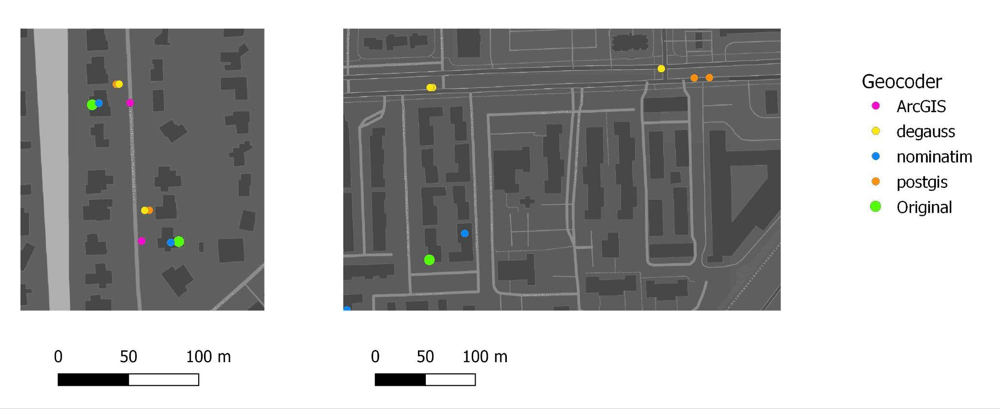

Geocoding assigns spatial coordinates to location information such as address strings or place names. The GIS toolchain needs patient locations as coordinates (or as a geography such as a tract or ZIP code) with dates, but the working group does not develop geocoding software. This page summarizes the options and what to consider before choosing one.
Geocoding is optional and sits outside the Gaia core. A site that already holds ZIP codes or census tracts can start from those; the Gaia overview describes the coarser-to-finer options.
| Process or method | Dependencies | Geocoders |
|---|---|---|
| Parcel-based geocoding | A building parcel layer | Nominatim, ArcGIS |
| Interpolation-based geocoding (U.S. addresses only) | Roadway network; road-segment address ranges | PostGIS, DeGAUSS, ArcGIS |
| ZIP-code geocoding | ZIP/postal code polygons; ZCTA crosswalk (ZIP to tract, ZIP to county) | DeGAUSS, ArcGIS |
| City or administrative-unit geocoding | Access to a gazetteer API | |
| Field observations | GPS receiver (device calibration) |
DeGAUSS and the PostGIS TIGER geocoder are optional components of the Gaia Docker deployment and run locally. Nominatim has been used as an alternative. ArcGIS Pro is a commercial tool shown for comparison: it is not part of the toolchain, and it sends addresses to the vendor’s servers.
| Geocoder | Match score | Match CRS | Results | Depends on census vintage | Size for USA deployment |
|---|---|---|---|---|---|
| PostGIS TIGER | 0 (good) to 100 (bad) | NAD83 | single | yes | about 233 GB |
| DeGAUSS | 0 (bad) to 1 (good); precision as range, street, intersection, zip, city | NAD83 | multiple | yes | about 10 GB |
| ArcGIS Pro | 0 (bad) to 100 (good); precision as address type | WGS84 | single | no | about 53 GB |
| Nominatim | no match score | WGS84 | multiple | no | about 335 GB |
PostGIS TIGER and DeGAUSS cover U.S. addresses only; Nominatim (OpenStreetMap) is not limited to the U.S.
Geocoders differ in how close they land to the true location and in how often they match at all. Comparing them on a sample of addresses with known locations, and recording versions, reference-data dates and preprocessing, is the way to choose one for a site. The comparison data for one such exercise are in geocode-benchmark-2023.

Two example addresses: the green point is the original location, the others are each geocoder’s result.
One address through the workflow:
Where and when: 1410 NE Campus Pkwy, Seattle, WA 98195
Geocoding input: {'location_id': 1, 'Addr1': '1410 NE Campus Pkwy', 'Addr2': '',
'City': 'Seattle', 'State': 'WA', 'Zip': '98195'}
Geocoding output: {'location_id': 1, 'Lat': '47.6567171', 'Lng': '-122.3066182',
'Match_score': '0.8', 'Precision': 'range', 'geocode_result': 'geocoded'}Accuracy considerations: whether the match is interpolated or parcel-based, the spatial unit of the analysis (tract, city), address review and correction, and positional error where ground truth exists.